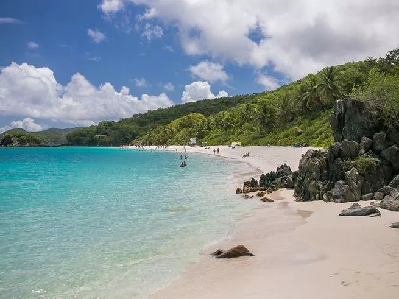

Trunk Bay Beach, St. John
Most beaches aren’t postcard-perfect — but Trunk Bay isn’t most beaches. Located on the northwest coast of the smallest of the three U.S. Virgin Islands, where 60 percent of the land is national park, it’s renowned for its talcum-soft sand and underwater snorkel trail. And while St. John (along with St. Thomas and St. Croix) was slammed during 2017’s hurricane season, Trunk Bay has rebounded and continues to win new fans.